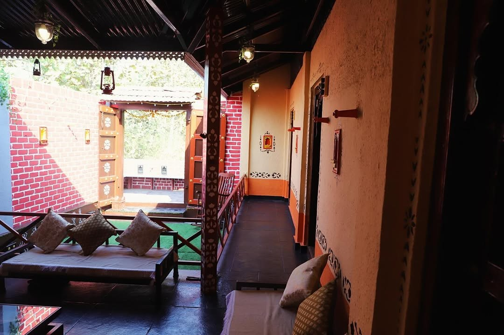
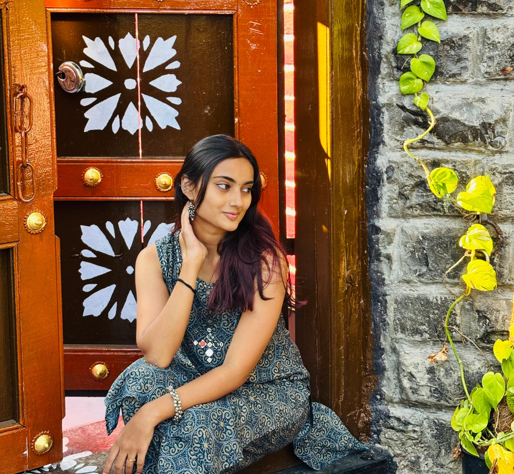

Our Heritage Story
Devran Wada is an authentic old Maharashtrian farmhouse that stands as a testament to traditional Puneri architecture and rural heritage. Located near the historic Sinhagad Fort in the serene village of Golewadi, our property offers a unique glimpse into the architectural beauty and cultural richness of old Pune.

A Living Heritage
The wada features classic elements of traditional Puneri architecture - from the intricately carved wooden pillars and doors to the central chowk (courtyard) that serves as the heart of the property. Every corner of this heritage farmhouse tells a story of craftsmanship and cultural legacy.
The wooden structures, stone walls, and traditional layout have been carefully preserved to maintain the authentic character of the property. The rustic charm combined with the natural beauty of the surrounding countryside creates an atmosphere that is both peaceful and visually stunning.

Perfect Location
Situated at Sinhagad Fort Paytha Yaa in Golewadi, Ghera Sinhagad, our farmhouse enjoys a prime location that combines accessibility with natural beauty. The proximity to Sinhagad Fort adds historical significance to the surroundings, while the rural landscape provides diverse backdrops for photography and filming.
The location offers stunning views, peaceful ambiance, and the authentic rural atmosphere that makes it ideal for creative projects seeking genuine heritage settings.

Ideal for Creative Productions
Devran Wada has become a sought-after location for various creative projects. The authentic architecture and diverse spaces within the property make it perfect for:
- Pre-wedding photography and videography
- Advertisement film shoots
- Social media content and reels
- Feature films and short films
- Fashion photography
- Documentary filming
The versatility of the location allows creators to capture multiple scenes and moods within a single property, making it both convenient and cost-effective for production teams.